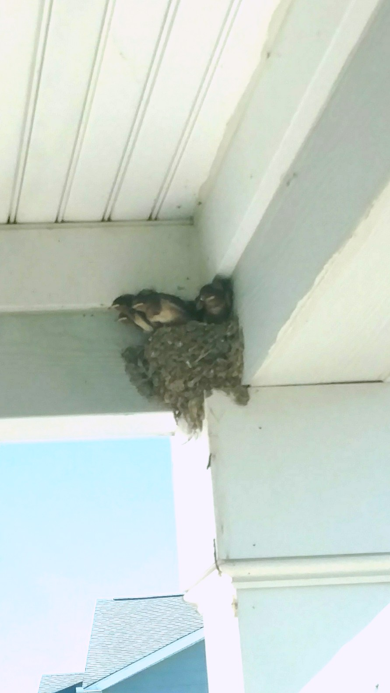
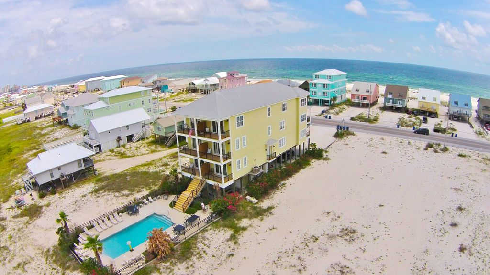
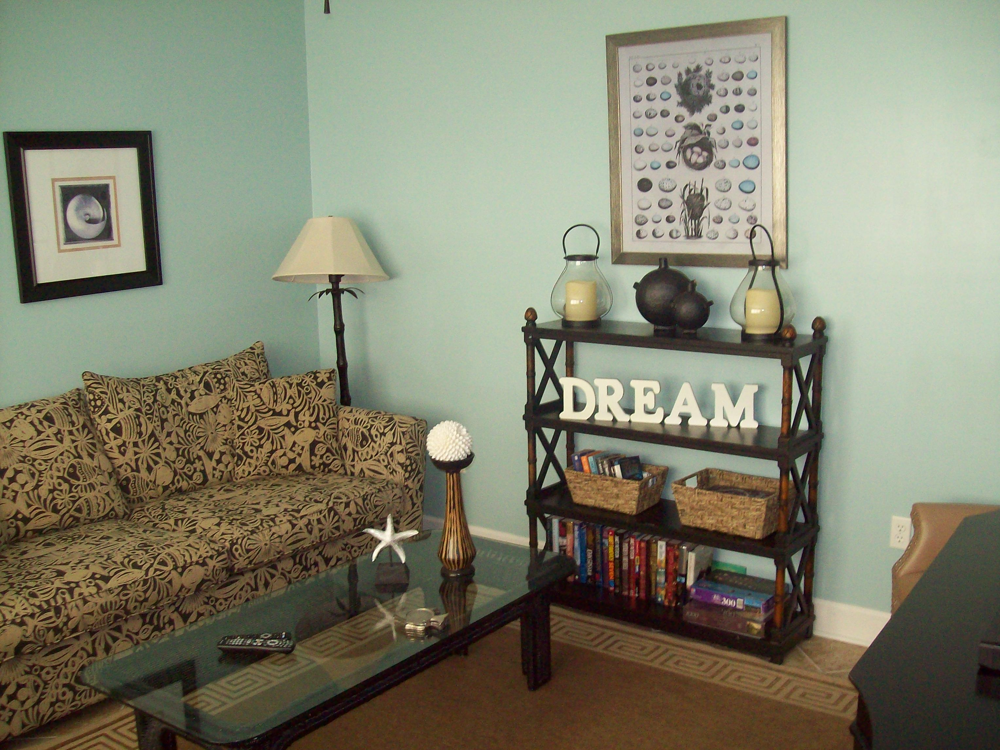

July 7 -- Where I work right now. The weather is a little weird recently; it's very hot with lots of rain and humidity. It's an okay place to live, and I'll miss some of the people. I'm not sorry to leave, though.
We plan to get out of here by noon on the 14th.
July 9 -- I've been watching the bird nest on the front porch. The babies appear to have all of their flight feathers, so I think they will be flying soon. I hope they do, because I'm not sure if the housing office or next tenants will care about them.

July 11 -- I talked with the housing office, and apparently it is illegal for anyone to mess with the nest while it is in use. The person I emailed was really nice, and she let everyone know to look out for baby birdies (even informed the landscaping company). So I don't have to stress about that anymore, and I passed my fitness test, so I won't worry about that either. Now I just have to figure out how to get our pets transported.
July 12 -- The pets are coming with us. It shouldn't be too much of a problem, just have to add the dog kennel to our luggage. Or I can see if we can sell it. We'll pack the car tonight and tomorrow, and I should be finished cleaning the house early tomorrow afternoon. Right now I just have to wait for people to be available to sign my outprocessing checklist.
Charlotte Hotel
We will be here for one night on the way to the vacation house. I'll post pictures when we arrive. (I think the hotel has free wifi)
July 15 - So, my camera is somewhere in the car, I'll see about at least getting some pics with my phone before we leave. Motel 6 is nothing fancy, though. Simple room on the ground floor with a bed, a tv, and a desk. The AC is loud. We had Taco Bell for dinner, and Rob got extra stuff; I guess the manager felt bad about being short handed, and it was his last day on the job.
We arrived safely, the trip was rather booring, but Rob drove half of it, and the animals seem to be doing just fine.
Gulf Shores, Alabama

This is the place that Rob's family has decided to have this year's family reunion. They pick a different place every year. Normally his sisters attend and bring their families, and his parents always go because they're the people in charge of setting it up. That's a lot of people, and sometimes extended family shows up too.
We will be here for a week before moving on to Texas.
July 16 -- First day at the vacation house went well. I was immediately met by my neice, Kimberly. She showed me around the house and helped me pick out my room. After unpacking and settling in a bit, I was basically commanded to join the children in the pool. It was more fun than I thought it would be, and I found myself giggling a lot.
Click the Dream to find pictures of the house. 
I was able to take a walk along the beach. It was beautiful, even with the clouds. I loved watching the waves come in and just watching the ocean. I took lots of pictures of the beach, so I put them on a separate page. Click on the ocean below to look at them.
I got a little distracted trying to take close-ups of the lovely flowers too.
July 18 -- Yesterday we went to Alligator Alley. The kids fed the 'gators, and we all got to see the big ones at feeding time. Rob's mom even held one of the babies for a moment. She seemed a little freaked out by it, but she held on long enough for everyone to take pictures. Then we got into a separate area where Rob and I held a snake and saw some giant tortises hiding.
When we left Alligator Alley, it was time for lunch, so we went to Lambert's. I'd never heard of it before, but it was advertised as 'Home of the Throwed Rolls'. It was very busy, and we had to wait a long time to get in. There seemed to be a lot of activity going on inside, and a bit noisy. Every few minutes, one of the servers would come out with a cart of freshly baked bread rolls and throw them and anybody who raised their arms. They also have what they call 'pass-arounds' which are basically side dishes that they continue serving constantly. Like Tucanos, but with vegetables.
Today was a shopping day. We went to the Souvenir Shoppe to get gifts and T-shirts. I got a round-ish shot glass and a glass bottle with pirate skull on it. Tonight's dinner is 'Taco Tuesday'.
Omi's House
Omi and G'pa Mac are the best. Every time I go, I get chocolate cake and ice cream and the best breakfasts.
Albuquerque
Rob and I have a lot of friends in Albuquerque. We are going to spend a night there to say hello.
Mom & Dad
This is the last family visit before we go on to Seattle. I want to stop here for at least 3 days, maybe a week
I found an interesting place for us to stop in Wyoming. At the Buffalo Bill Historic Center (or Center of the West) we can see several museums, have a buffet meal, and listen to the 'Cowboy Music Review'.